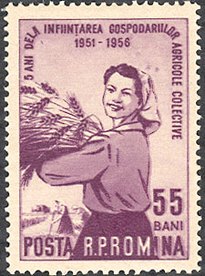
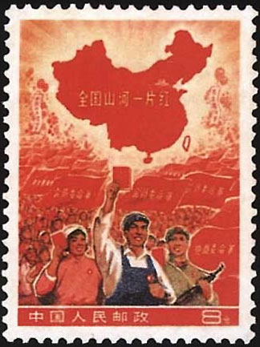

The communist historiography usually called "errors" its own past crimes. Here we will show just a few of its erroneous stamps, a kind of philatelic stuttering that is nevertheless strongly related to crimes and repressions directed against their own populations.

The participants in the meeting (plenara) of the Central Committee of the Romanian Working Party (later the Romanian Communist Party) that took place between 3 - 5 March 1949 decided (of course unanimously) the creation of the collective farms, after the model of the infamous Soviet kolkhozes. The free Romanian farmers were obliged to hand over to the collective farms their land, livestock and tools, without any compensation and to work together in these collectives. Ten thousands of farmers that opposed these measures were imprisoned or deported, and many of them never returned to their villages.
In 1956 the Romanian post issued a commemorative stamps dedicated to the beginning of the collectivization, but labeled it "5 years from the creation of agricultural collective farms, 1951 - 1956." A few days later the stamp was pulled back and replaced by a new one, labeled: "7 years from the creation of agricultural collective farms, 1949 - 1956."
In Hungary, the Association of Young Pioneers was formed for youngsters in elementary school. Membership was open to children from six to fourteen years of age. The organization explained to children the basic tenets of the Marxist-Leninist world view. Joining the Young Pioneers was a matter of course for most youngsters in elementary school. Most meetings took place in classrooms of primary schools. Source.
The above stamp, on the left, is one of the rare errors of the Hungarian post-WW2 philately. It was allegedly falsely labeled "Our Reserves for Future Battles", and it was rapidly replaced by "In a Free Motherland Happy Youth Right On" (the stamp on the right). Obviously, the disclosure in a too overt manner of the real intentions of the pioneers' organization was found disturbing, which seemed to justifiy the effort for replacement of the stamp. As in all such cases, replacement did nothing but to point out what was meant to be hidden.

But some errors were so deep that the only solution was to just withdraw the erroneous stamp, without replacing it by a corrected one. Take a look at the stamp above, on the left, issued by the People's Republic of China in November 1968 (Scott 999A). Because the map is inscribed "The entire nation is red" but the island of Taiwan appears white, the stamps was withdrawn after two days. Obviously, the stamp could not be corrected and reissued, because Taiwan, always considered by the PRC as part of its territory, wasn't red (communist).
Just for fun, I have concocted a stamp that displays a modern Chinese ceramic, sought especially at the nostalgics of communism. The design of the statuette is the same as that of the stamp, and the inscription too, just that the "Red Book" is presented this time by its author (Mao) and by his wife.
Acknowledgment: Many thanks to the participants in the newsgroup news:fr.rec.philatelie who mentioned the Chinese stamp and who pointed me to the ceramics.
Created: 06/27/2007. Revised: 04/17/2012 .
Copyright © 2007 - 2012 by Victor Manta, Switzerland.
All rights reserved worldwide.